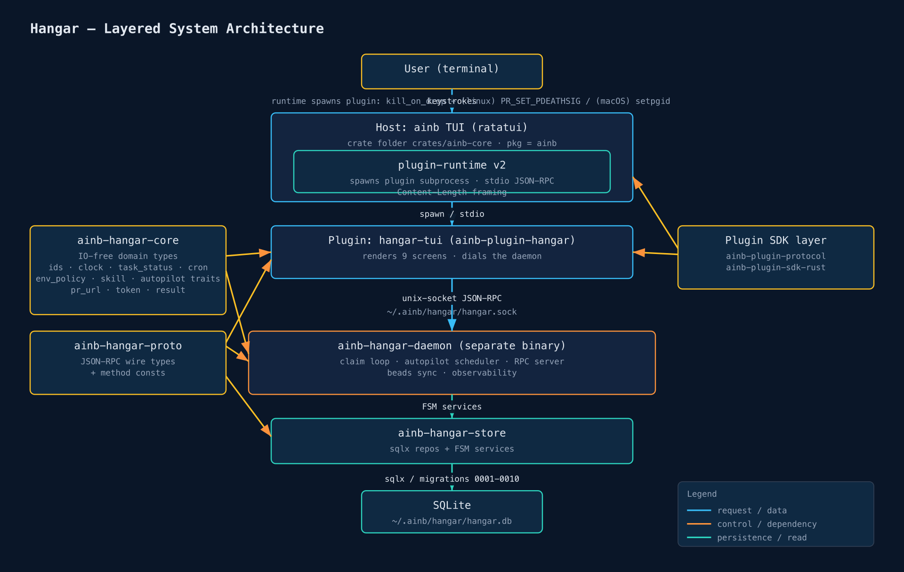
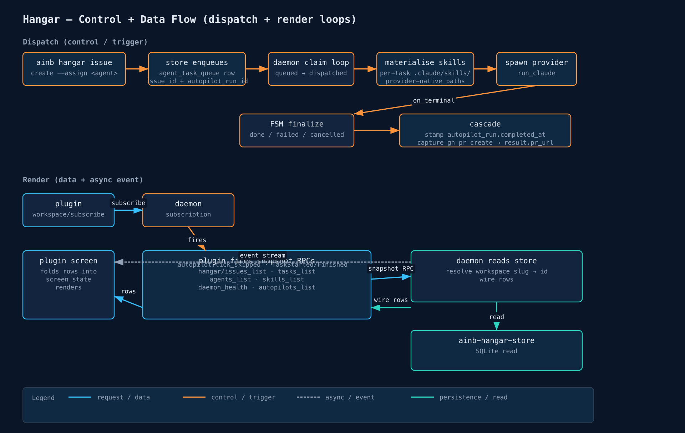
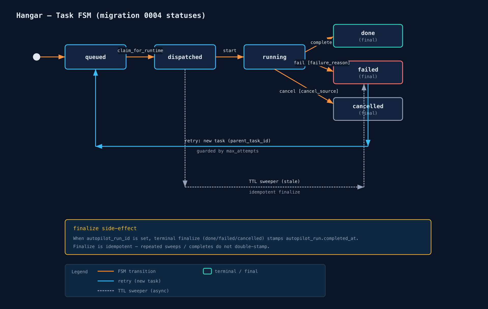
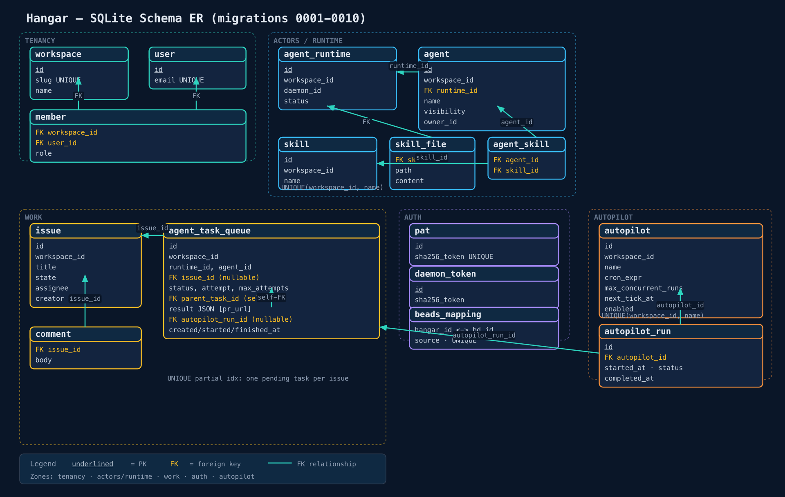
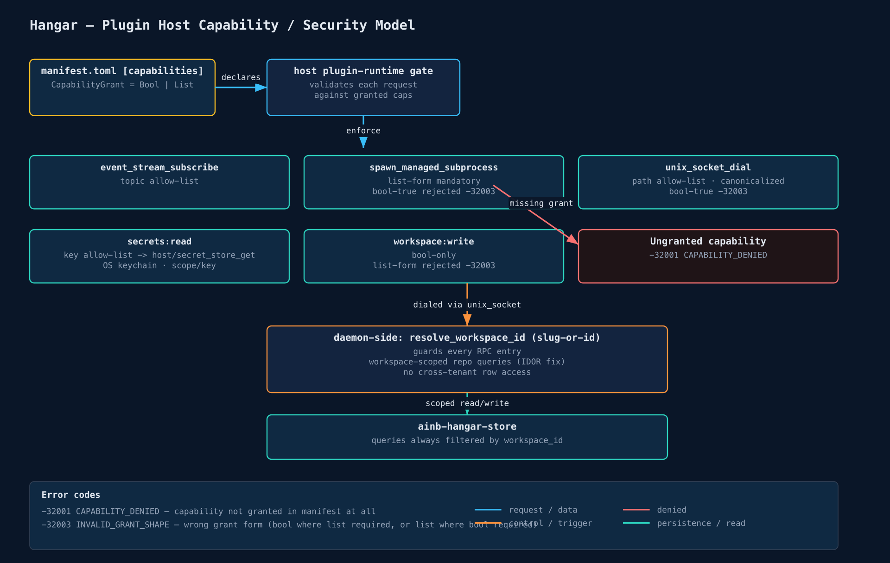
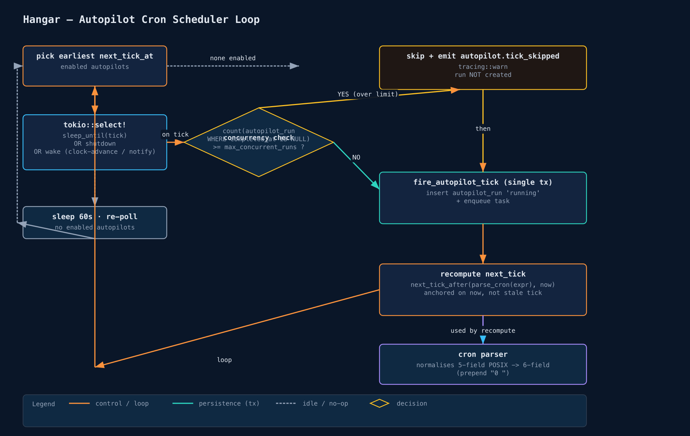

A TUI-first managed-agents control plane — a feature replica of Multica built natively inside ainb. No web UI: the terminal is the control plane. Issues, autopilots, skills, a kanban board, and a managed-agent fleet, driven by a loosely-coupled daemon + plugin over a unix-socket JSON-RPC contract.
Hangar gives ainb a managed-agent control plane: a place to file work as issues, assign them to agents (Claude / Codex / Gemini), watch tasks march through a lifecycle on a kanban board, schedule recurring work with autopilots, curate reusable skills & agent templates, and observe the whole fleet's health — all from the terminal.
It is deliberately loosely coupled. A standalone ainb-hangar-daemon owns the data plane (SQLite, the task FSM, the cron scheduler, the agent runner). The TUI is a plugin (hangar-tui) that the host ainb binary loads and that talks to the daemon over a unix-socket JSON-RPC contract. The plugin holds zero domain logic — it subscribes, pulls snapshots, renders, and forwards key intents. This means the control plane runs (autopilots fire, tasks dispatch) whether or not a TUI is attached.
File an issue, assign an agent, and the daemon dispatches a task that runs the provider in an isolated git worktree, streaming its transcript back.
Cron-scheduled autopilots fire tasks on a schedule, with a concurrency guard that skips a tick if the prior run is still in flight.
Import skills from the toolkit, bundle them into 10 curated agent templates, and materialise them into each task's provider-native skill directory at dispatch.
Structured JSONL tracing (+ optional OTLP), instrumented service spans, a live daemon-health sparkline, and a logs tail on both CLI and TUI.
Five Rust components in three planes: the host + plugin (presentation), the daemon (control), and the store + SQLite (data). Two cross-cutting crates — ainb-hangar-core (IO-free domain types) and ainb-hangar-proto (wire types) — are shared by everything.

ainb + plugin-runtime v2 → hangar-tui plugin → unix-socket JSON-RPC → ainb-hangar-daemon → ainb-hangar-store (sqlx) → SQLite.The ratatui TUI binary (folder crates/ainb-core, package ainb). Embeds plugin-runtime v2, which discovers, spawns, and supervises plugin subprocesses and brokers their host-capability calls. Reaches Hangar from the home screen via g.
Package ainb-plugin-hangar. A native subprocess speaking JSON-RPC 2.0 over stdio (Content-Length framing). Renders 9 screens, dials the daemon socket, subscribes to a workspace, pulls snapshots, folds events. No DB, no domain logic.
Standalone binary. Hosts the unix-socket JSON-RPC server, the task claim loop, the autopilot scheduler, the provider runner, the beads sync, and the observability subscriber. The control plane proper.
sqlx repositories + the task-FSM services (claim / start / complete / fail / cancel / retry / sweep). Owns the schema (migrations 0001–0010) over a single SQLite file at ~/.ainb/hangar/hangar.db.
IO-free domain layer: typed ids, the HangarClock/IdGen traits, the task-status FSM table, the cron parser, env-allowlist policy, skill + autopilot service traits, PR-URL parser, token mint/verify, TaskResult.
The JSON-RPC wire types + method-name constants shared by daemon and plugin. Plus the plugin SDK (ainb-plugin-protocol / ainb-plugin-sdk-rust) that defines the host-call contract and the stdio server loop.
The plugin dials ~/.ainb/hangar/hangar.sock via the host unix_socket_dial capability and speaks the same JSON-RPC framing the host uses over stdio. The daemon resolves a workspace identifier (slug or id) to the real row before scoping any query — the guard that closed the cross-tenant IDOR. Plugin subprocesses are spawned with kill_on_drop(true) plus an OS leak-guard (PR_SET_PDEATHSIG on Linux, setpgid + kill(-pgid) on macOS).
core is the root and depends on nothing internal (so it stays IO-free + trivially testable). store and proto both build on core; the daemon ties all three together. The plugin depends only on proto + the SDK — never on the daemon or store crates — so it cannot smuggle in domain logic.
| Crate | Purpose |
|---|---|
tokio | Async runtime — daemon server, claim loop, scheduler, runner, plugin stdio. |
sqlx (SQLite) | Async, runtime-checked queries; migrations 0001–0010. Postgres-compatible schema for a future backend. |
ratatui + crossterm | TUI rendering (host + plugin screens). |
cron v0.12 | Cron expression parsing (6-field; 5-field POSIX normalised by prepending 0 ). |
chrono | Time math for next-tick calc (bridged to epoch-millis storage via millis_to_utc/utc_to_millis). |
security-framework (macOS) | OS keychain backend for the secret store (ainb-hangar-secrets). |
sha2 + subtle | PAT/daemon-token hashing (sha256, stored hash-only) + constant-time verify. |
tracing-subscriber + tracing-appender | Structured JSONL sink with daily rotation (daemon.<date>). |
opentelemetry / opentelemetry-otlp (optional otlp feature) | OTLP span export; zero crates linked in the default build. |
zeroize | SecretBytes wiped on drop. |
Two loops run continuously and independently: the dispatch loop (control plane — turns issues into running agent tasks) and the render loop (data plane — turns daemon state into TUI pixels).

ainb hangar issue create --assign <agent> (or an autopilot tick) enqueues an agent_task_queue row.queued → dispatched), respecting per-agent max_concurrent_tasks..claude/skills/, .codex/skills/, .agent_context/skills/ …) — copied, scripts chmod 0755, kept outside the worktree git root so git status stays clean.dispatched → running), streaming the transcript.done/failed/cancelled, cascades autopilot_run.completed_at when the task belongs to an autopilot run, and captures any gh pr create URL into result.pr_url.workspace/subscribe for the active workspace.hangar/issues_list, tasks_list, agents_list, skills_list, autopilots_list, daemon_health — which the daemon answers from the store (resolving slug→id, scoping by workspace).TaskStarted/TaskFinished, autopilot.tick_skipped, skill updates) stream back over the subscription for instant feedback; the next snapshot reconciles authoritatively, so a dropped event self-heals.Every unit of agent work is an agent_task_queue row walking a strict finite-state machine. The transition table is exhaustively defined in ainb-hangar-core and enforced by the store's finalize services.

queued → dispatched → running → done | failed | cancelled, with idempotent finalize, retry via parent_task_id, and TTL sweepers.parent_task_id, capped by max_attempts; agent_error does not retry.queued (2h) / dispatched (5min) / running (2.5h) rows are swept to failed in idempotent batches (cap 500).autopilot_run_id stamps the run's completed_at in the same path.A single SQLite database, workspace-tenant from migration 0001. Every row is scoped to a workspace; every by-id query carries the workspace guard (the IDOR fix). The schema is kept Postgres-compatible for a future server backend.

workspace (slug unique), user (email unique), member (role).
agent_runtime (status), agent (runtime, visibility, owner).
issue + comment; agent_task_queue (status, attempt, parent_task_id, result JSON, autopilot_run_id) with a partial unique index = one pending task per issue.
skill (unique per workspace/name), skill_file, agent_skill M:N junction.
pat + daemon_token (sha256 only), beads_mapping (hangar↔bd).
autopilot (cron_expr, max_concurrent_runs, next_tick_at, enabled), autopilot_run (status, completed_at).
The plugin runs as a separate process and can only reach the host through declared, gated capabilities in its manifest.toml. Each capability is a Bool or an allow-List; the runtime enforces the grant before any privileged action.

-32001; ambiguous form → -32003; daemon-side workspace scoping closes IDOR.| Capability | Host call | Enforcement |
|---|---|---|
event_stream_subscribe | subscribe to event topics | topic-prefix allow-list |
spawn_managed_subprocess | spawn a tracked child (e.g. the daemon) | list-form mandatory; bool-true rejected -32003; reaped on teardown |
unix_socket_dial | dial the daemon socket | path allow-list, canonicalised; bool-true rejected -32003 |
secrets:read | host/secret_store_get → OS keychain | key allow-list; {scope, key}; read-only (no write path) |
workspace:write | set active / default workspace | bool-only; list-form rejected -32003 |
-32001 CAPABILITY_DENIED; an ambiguous/unsupported grant form returns -32003 MANIFEST_VALIDATION. Separately, every daemon-side by-id query is workspace-scoped (the resolve_workspace_id guard) so a leaked id from one workspace cannot read or mutate another's data.An autopilot is a cron expression + an agent + instructions. A single daemon task drives all of them.

next_tick_at across enabled autopilots, via a tokio::select! over sleep, shutdown, and a wake signal (used by tests' clock-advance).count(autopilot_run WHERE completed_at IS NULL) ≥ max_concurrent_runs it skips and emits autopilot.tick_skipped; otherwise fire_autopilot_tick inserts the run + enqueues the task in one transaction.Every Hangar feature is reachable two ways: a TUI screen (open Hangar with g, then a hotkey) and/or the ainb hangar <noun> CLI.
| Hotkey | Screen | What you do |
|---|---|---|
| 1 | Issues | Browse/filter issues (All/Members/Agents/Mine chips), c create, a assign agent, Enter open task detail. |
| 2 | Task detail | Live transcript (5-colour stream), PR badge + o open-in-browser, r retry / x cancel. |
| K | Kanban | 4 columns (queued/running/done/failed); Shift+←/→ moves a card → fires a task transition. |
| 4 | Skills | s sync from toolkit, i/d attach/detach to selected agent, Enter view body. |
| , | Settings | Provider keys (keychain write), workspace switching (s active/d default/n new/r rename). |
| 5 | Autopilots | List + recent runs; a/e create/edit, r run-now, d enable/disable. |
| D | Daemon health | Runtimes, claim-cache, concurrent tasks, dual-dim throughput sparkline (green success / red failure). |
| L | Logs | Tail the daemon's structured JSONL, level-filter chips, colour-by-level. |
| (modal) | Agent picker | Pick a human or agent to assign (presence dots, / filter, recents pinned). |
Built test-first: every feature carries an acceptance test (unit/integration), and most carry an e2e tripwire — a real test that drives ainb tui in a tmux pane (or the daemon over its real socket) and asserts the rendered/persisted result, per the tmux-ui-tripwire discipline.
| Feature (user action) | Layer | Acceptance | e2e tripwire | |
|---|---|---|---|---|
| Issues | ||||
| Create / list / show issue | CLI | hangar_cli_integration.rs (4) + cli::hangar parse (3) | tripwire_hangar_issue_roundtrip.rs | ✅ |
| Persist issue + assignee | store | repo_issue.rs (4) | — (via roundtrip) | ✅ |
| Issue list screen (nav/filter/create) | TUI | issue_list_reducer_test.rs (7) | tripwire_p4_issue_list_renders.rs | ✅ |
| Kanban board (4 cols, card move) | TUI | kanban_reducer (10) + rpc_over_socket + snapshot (5) | tripwire_kanban_columns_render.rs | ✅ |
| Tasks | ||||
| Task FSM (claim/start/complete/fail/cancel) | store+core | finalize_idempotency (22) + claim_task_integration + task_state_transitions | tripwire_task_happy_path_claude_provider.rs | ✅ |
| Retry chain (parent/child, max-attempts) | store | retry_chain.rs (8) | — | ✅ (acc.) |
| TTL sweep (stale → fail) | daemon | sweeper_ttls.rs (10) | tripwire_ttl_sweeper_fails_stale_dispatched.rs | ✅ |
| Task detail + transcript screen | TUI | transcript_reducer (10) + render_snapshot (2) | tripwire_p4_task_detail_streams.rs | ✅ |
| Task CLI (list/cancel/retry) | CLI | hangar_cli_integration + cli::hangar parse | — | ✅ (acc.) |
| Task-started banner | TUI | banner_reducer_test.rs (6) | — | ✅ (acc.) |
| Agents | ||||
| Agent picker (assign agent) | TUI | agent_picker_reducer_test.rs (8) | tripwire_p4_agent_picker_opens.rs | ✅ |
| agents_list snapshot | daemon/store | repo_agent.rs + rpc_server.rs | — (in picker tripwire) | ✅ |
| Skills | ||||
| Skill repo CRUD (scoping, cascade) | store+core | skill_repo_tests (9) + skill_service inline | — | ✅ (acc.) |
| Skills sync importer (idempotent) | daemon/CLI | tripwire_skills_sync_idempotent.rs (5) + cli parse | screens_render_from_daemon (sync RPC) | ✅ |
| Skill manager screen (attach/detach/sync) | TUI | skill_manager_reducer (9) + snapshot (2) | tripwire_p4_skill_manager_lists.rs | ✅ |
| Dispatch-time materialisation | daemon | materialise_skills_tests.rs (8) | tripwire_skill_import_and_dispatch.rs | ✅ |
| Templates | ||||
| 10 curated templates (embedded, resolve) | core | template_registry_tests.rs (5) | — | ✅ (acc.) |
| templates list / show / use | CLI+daemon | template_use_tests (6) + cli parse | — | ✅ (acc.) |
| Autopilots | ||||
| Cron CRUD (reject invalid cron) | store+core | repo_autopilot (14) + cron.rs inline (12) | — | ✅ (acc.) |
| Scheduler fires on schedule | daemon | scheduler_loop + repo_autopilot_enqueue | tripwire_autopilot_fires_on_schedule.rs | ✅ |
| Scheduler skips when in-flight | daemon | scheduler_loop::skip_when_prior_run_in_flight | tripwire_autopilot_skips_when_running.rs | ✅ |
| Autopilots manager screen | TUI | autopilots_reducer (6) + snapshot (4) + rpc_over_socket | — (real-socket, no tmux) | ✅ |
| autopilot CLI (create/list/disable/run) | CLI | hangar_autopilot_cli.rs (2) + cli parse | — | ✅ |
| Auth / Secrets | ||||
| OS keychain store/get/delete | secrets | backend.rs (7) | tripwire_keychain_roundtrip.rs (#[ignore], dev-mac) | ✅ |
| secret_store_get cap gating | runtime | secret_store_cap.rs (5) | — | ✅ (acc.) |
| PAT / daemon tokens (hash-only) | store+core | repo_token (11) + token.rs inline (3) + cli | — | ✅ (acc.) |
| Env allowlist (block LD_PRELOAD) | core+daemon | env_policy (5) + env_allow_config (3) + runner | tripwire_env_allowlist_blocks_ld_preload / _passes_home | ✅ |
| danger-full-access first-run warning | core+daemon | warnings.rs inline (4) | tripwire_warning_shown_on_first_provider_use.rs | ✅ |
| Workspace switching in Settings | TUI+runtime | settings_reducer + workspace_cap.rs (7) | tripwire_workspace_switch_e2e.rs | ✅ |
| Settings screen (sections, key entry) | TUI | settings_reducer_test.rs | tripwire_p4_settings_renders.rs | ✅ |
| Observability | ||||
| Tracing JSONL sink | daemon | it_subscriber_writes_jsonl.rs | — | ✅ (acc.) |
| OTLP exporter (otlp feature) | daemon | it_otlp_export_when_endpoint_set.rs (--features otlp) | tripwire_otel_export_when_endpoint_set.rs | ✅ |
| Instrumented service spans (8 methods) | store+daemon | service_spans_emit + beads_sync_spans_emit | — | ✅ (acc.) |
| Daemon health pane + sparkline | TUI+daemon | snapshot_daemon_health.rs (5) | tripwire_daemon_health_sparkline.rs | ✅ |
| logs tail CLI + logs screen | CLI+TUI | logs.rs inline (8) + cli + snapshot_logs_screen (3) | — (no tmux for logs screen) | ✅ (acc.) |
| gh integration | ||||
| PR-URL capture into task result | core+daemon | pr_url_parse (10) + result inline + issues_list_pr_url (3) | tripwire_pr_capture.rs | ✅ |
| PR badge + o open-in-browser | TUI | pr_badge_snapshot (5) + pr_open_keybinding (3) | tripwire_pr_badge.rs | ✅ |
| Daemon / Transport | ||||
| Daemon boot + migrations apply | daemon+store | tripwire_migrations_apply.rs (16 tables) | tripwire_daemon_boots.rs | ✅ |
| Unix-socket JSON-RPC + snapshots | daemon+proto | wire_types (6) + rpc inline + rpc_server.rs | tripwire_hangar_plugin_connects.rs | ✅ |
| workspace/subscribe + event stream | proto+plugin | event_roundtrip (6) + stream_decode (8) + daemon_dial | tripwire_detects_daemon_drop | ✅ |
| Cross-screen navigation | TUI | screen_router_test.rs (5) | tripwire_p4_cross_screen_navigation.rs | ✅ |
| Beads bidirectional sync | daemon | beads_adapter/reconcile/inbound/outbound/cli (50+) | tripwire_beads_roundtrip.rs | ✅ |
| Claude runner exec (env/exit/stream/timeout) | daemon | runner_claude.rs (6) | — (in happy-path) | ✅ |
| Full-suite e2e guard (no shrink) | daemon | — | tripwire_full_e2e.rs | ✅ |
Real tmux drive of ainb tui (11 screens/flows) or daemon-over-real-socket (11 control-plane flows).
Strong unit/integration coverage; no tmux tripwire — task retry, task/templates/token CLIs, skill CRUD, autopilot CRUD, JSONL sink, service spans, logs screen.
Every feature has at least an acceptance test.
tmux capture-pane proof of the rendered screen.task / templates / token CLIs are acceptance-only (parse + handler), versus the issue path which has a full tmux roundtrip.#[ignore] by default (needs a real dev-mac keychain prompt); the in-memory + cfg-gated backend tests are the authoritative proof.Per-bead TDD (RED → GREEN → review → scoped gate → close), each phase capped by e2e tripwires.
P0–P8 complete and verified; P9 (gh integration ✅, PR badge ✅, CI matrix ✅) in the release-prep stretch — draft PR feat/multica → main (#179) open, target tag v2.0.0.